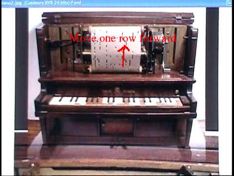

- Compute:
- Compute = calculate
- Computer:
- Computer = a machine that performs a series of computing instructions
I.e.: a computer can execute the kind of instructions:
- Arithmetic operations on 2 numerical values (e.g.: +, −, ×, /)
- Compare 2 numerical values (e.g., >, ≥, <, ≤, ==, != )
- Logical operations on 2 boolean values (e.g.: AND, OR, NOT)
- All machines that have been
invented by humans
have
one principle property in
common:
- A machine always repeats the same steps over and over again
Example: the 4 stroke engine (machine !!!) in automobiles:

The 4 stroke engine repeats these 4 steps over and over again:
- Intake step:
- The piston moves downward while the in-take valve is opened to suck in a mixture of gasoline and air
- Compression step:
- The piston moves upward while both valves are closed to compress a mixture of gasoline and air (higher pressure allows better ignition)
- Ignition step (see the spark !):
- The spark plug ignites the compressed fuel mixture and the hot burning gas will push the the piston downward
- Expell step:
- The piston moves upward while the in-take valve is opened to suck in a mixture of gasoline and air
After expelling the burned gas mixture, the engine is back to its original (starting state and is ready to repeat the cycle of steps all over again !!!
The ignition step of the 4 phase engine produce a lot of energy (due to the (controlled) explosion inside the combustion chamber of the engine.
The energy is then transferred to the car's axil and wheels to make the car move....
I know few of the students are "mechanical engineers" and I don't expect you to understand the engine.
All I want you to see in this example is:
- All machines invented by mankind operate by repeating a fixed number of steps over and over again
- The CPU is
a
machine
(it's an electrical machine) !
- The task that a
CPU must perform is:
- Execute a computer instruction
- Like any
machine,
a CPU will
repeatedly performs
a (fixed) number of "steps"
of phases
- The steps/phases that a CPU go through will execute the next instruction in the computer program
- The task that a
CPU must perform is:
- So the CPU inside a computer
goes through
a fixed series of steps
over and over again.
The steps that are performed by the CPU are collectively called:
- The CPU's instruction execution cycle
- The Instruction Execution Cycle of
the CPU consists of
the following 4 steps:
- The instruction fetch step/phase
- During this phase, the CPU will fetch the next instruction from memory and store it in the Instruction Register (IR)
- The instruction decode step/phase
- During this phase, the CPU decode the instruction (a binary number !) in the Instruction Register (IR) and determine all the operands that it needs to execute the instruction
- The operand fetch step/phase
- During this phase, the CPU fetches the operands from the registers to the inputs of the Arithmetic/Logic Unit (ALU)
- The instruction execute step/phase
- In this phase, the CPU performs the arithmetic/logic operation and save the result in some register
- The instruction fetch step/phase
-
Here is a detailed explanation on
what happens in
each of the
4 phases of the
instruction execution cycle:
- The instruction fetch step:
- In this step, the CPU will
fetch the
instruction
from the
memory that is
stored at the memory address given by
the value inside the
Program Counter (PC) into
the Instruction Register of the
CPU
Recall that the Program Counter (special register) contains the address (= location in memory) of the next instruction.
So in this step, the CPU will fetch a copy the next instruction from the memory into its Instruction register.
After fetching the instruction from memory, the CPU will update (= increase) the Program Counter so it will contain the address of the subsequent instruction.
When this step is completed:
- The Instruction Register inside the
CPU will contain the next instruction that the CPU must execute
- The CPU prepared itself to
fetch a new next instruction
(= which is the instruction that
physically follows the
fetched instruction)
- This is just like the
mechanical piano where the
paper tape will
move forward one row
after the piano has finish playing the
notes on the current row !!!
 (So the piano does not play the same notes over and over again !!!!)
So this preparation will ingeniously enable the repetition of the same steps to fetch (and execute) a different instruction !
- This is just like the
mechanical piano where the
paper tape will
move forward one row
after the piano has finish playing the
notes on the current row !!!
The remaining 3 steps of the Instruction Execution Cycle are responsible to execute this instruction.
- The Instruction Register inside the
CPU will contain the next instruction that the CPU must execute
- In this step, the CPU will
fetch the
instruction
from the
memory that is
stored at the memory address given by
the value inside the
Program Counter (PC) into
the Instruction Register of the
CPU
- The instruction decode step
- The instruction is
represented by a
binary pattern
(because the computer memory can only store binary patterns)
- Each binary pattern will
represent a certain
computer operation
- Before the CPU
can perform an instruction,
the CPU must find out what is
the instruction that is
represented (= encoded) by the
binary pattern
- The CPU contains circuitry to
decode the
instruction's binary pattern - you will learn more about these
circuits in CS 355
- For CS255, you only need to know
that
in the instruction decode step,
the CPU will find out:
- What operation the CPU needs to perform (e.g.: add, subtract, multiply, divide, negate, logical AND, logical OR, logical NOT, etc.)
- Which operands the CPU needs to use in the operation and where to store the result (e.g.: if the instruction was "add", then which input values should "add" use, and where to store the sum)
- The instruction is
represented by a
binary pattern
(because the computer memory can only store binary patterns)
- The operand fetch step
- After identifying the
input operands in
the instruction decode step,
the operand fetch step
will obtain (= fetch) the
input values (= operands) for
the instruction
- The values are
transported electronically
through wires inside the
CPU
to the Arithmetic/Logic Unit (ALU)
where the operation take place
(The ALU contains circuitry to perform the calculations)
- When this step is complete, the
CPU will:
- Have determined the operation to perform
- Obtained the operands needed to perform the operation
The CPU is now ready for the final step of the Instruction Execution Cycle !
- After identifying the
input operands in
the instruction decode step,
the operand fetch step
will obtain (= fetch) the
input values (= operands) for
the instruction
- The instruction executing step
- In this final step, the
CPU will
perform the operation specified by
the instruction code on the
fetched operands
- After performing the operation, the result of the operation will be saved in the designated register
After the instruction execution step, the operation specified in the instruction (that was fetched in step 1 of the Instruction Execution Cycle) is complete !!
The CPU can discard the instruction in the Instruction Register
(You don't need to keep the instruction or save it back in memory, because the instruction in the Instruction Register is a copy transfered from memory.
So just like you can discard an meal order at McDonalds or some restaurant after fulfilling the order, the CPU can discard the instruction after executing (= "fulfilling") the operation !)
Notice that:
- The CPU has
prepared itself
to fetch a
new "next instruction"
(= the instruction that follows the fetched instruction) in
Step 1 of the
Instruction Execution Cycle
(This is just like the mechanical piano where the paper tape will move forward one row after the piana has finish playing the notes on the current row !!!)
The CPU can now repeat the Instruction Execution Cycle again !!!
When the CPU repeats the Instruction Execution Cycle, it will fecth a different instruction (because the CPU has made the necessary preparation in Step 1 !!!)
- In this final step, the
CPU will
perform the operation specified by
the instruction code on the
fetched operands
In the next webpage, I will illustrate the operations in Instruction Execution Cycle using diagrams to show you how the computer system make this possible (so you can understand better how a computer operates).
- The instruction fetch step: